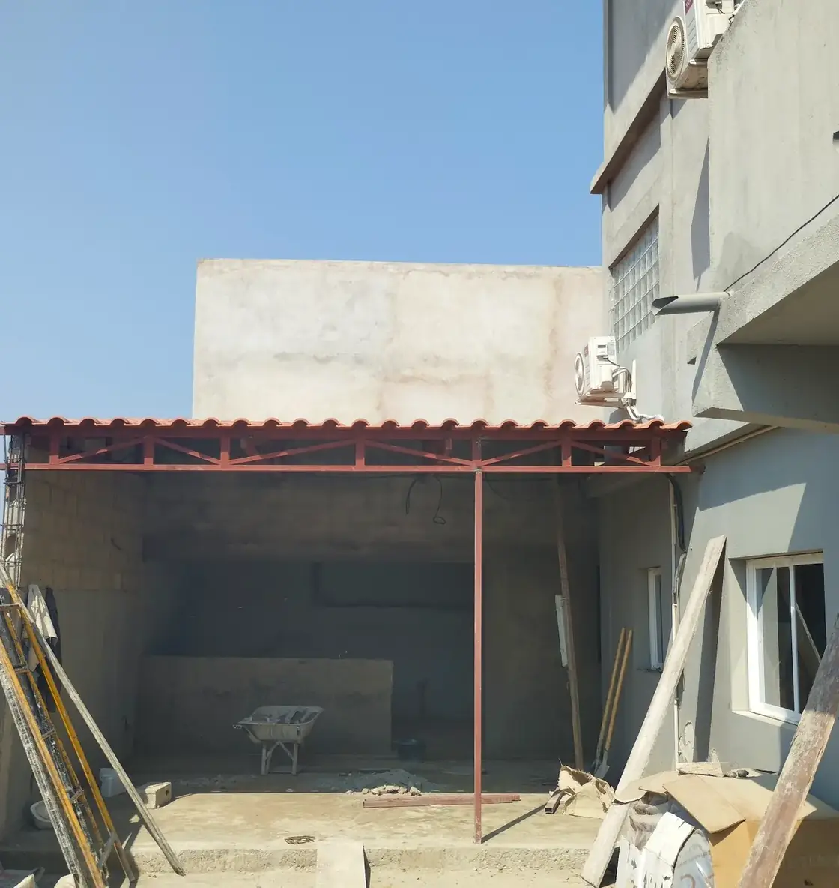
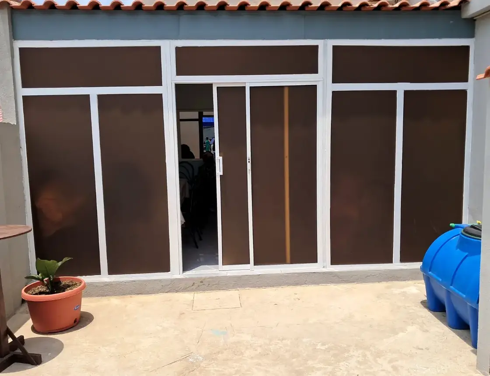

Preventiva e correctiva
Intervenções planeadas ou pontuais, dentro das especialidades e do âmbito acordado.
Manutenção preventiva e corretiva, conservação de instalações e apoio operacional para empresas e instituições. O âmbito, a frequência, os recursos e as responsabilidades são definidos antes de cada intervenção.
 REGISTO DE INTERVENÇÃO · MANUTENÇÃO
REGISTO DE INTERVENÇÃO · MANUTENÇÃOA HMATIAS organiza serviços de manutenção e apoio operacional de acordo com as características das instalações e as necessidades do cliente. Antes de apresentar uma proposta, procuramos compreender as áreas abrangidas, o tipo de intervenção, a frequência, os recursos e as condições de acesso.
Os serviços são dimensionados em função do espaço, da utilização, da frequência necessária e das condições acordadas.
Intervenções planeadas ou pontuais, dentro das especialidades e do âmbito acordado.
Organização de serviços de limpeza e conservação para escritórios e instalações.
Coordenação de necessidades recorrentes e acompanhamento de intervenções.
Registos do acervo HMATIAS associados a coberturas, estruturas e componentes de instalações. A identificação de clientes depende de autorização.



Para avaliar correctamente um pedido de Facilities, recomendamos reunir informação prática sobre a instalação e o serviço pretendido.
Envie a localização, o tipo de instalação e a necessidade identificada. A equipa poderá avaliar a informação antes da proposta.
Solicitar proposta ↗